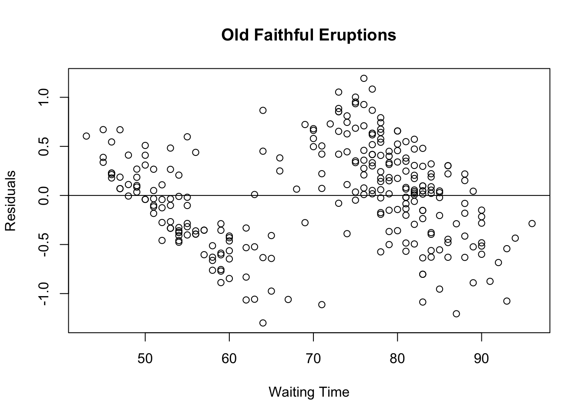

Lecture 12
Lecture handout:
chp8-handout.pdf
Lecture slides (w/ answers):
chp8.pdf
Textbook:
Chapter 8, Intro to Regression
R Topics:
generating data for ANOVA
x <- c(rep("a",25),rep("b",25),rep("c",25),rep("d",25))
y <- c(rnorm(25,5,10),rnorm(25,10,10),rnorm(25,15,10),rnorm(25,20,20))
yhat <- c(rep(5,25),rep(10,25),rep(15,25),rep(20,25))
res <- yhat - y
ssres <- sum(res^2)
anova(aov(y~x)) # why is sum squared residuals not the same in anova(aov()) as ssres?## Analysis of Variance Table
##
## Response: y
## Df Sum Sq Mean Sq F value Pr(>F)
## x 3 2289.1 763.04 5.6754 0.001273 **
## Residuals 96 12906.9 134.45
## ---
## Signif. codes: 0 '***' 0.001 '**' 0.01 '*' 0.05 '.' 0.1 ' ' 1ssgroup <- sum(25 * (mean(y[1:25])-mean(y))^2 + 25 * (mean(y[26:50])-mean(y))^2 + 25*(mean(y[51:75])-mean(y))^2 + 25*(mean(y[76:100])-mean(y))^2)
sstot <- sum((y-mean(y))^2)residual plot
eruption.lm <- lm(eruptions ~ waiting, data=faithful)
summary(eruption.lm)##
## Call:
## lm(formula = eruptions ~ waiting, data = faithful)
##
## Residuals:
## Min 1Q Median 3Q Max
## -1.29917 -0.37689 0.03508 0.34909 1.19329
##
## Coefficients:
## Estimate Std. Error t value Pr(>|t|)
## (Intercept) -1.874016 0.160143 -11.70 <2e-16 ***
## waiting 0.075628 0.002219 34.09 <2e-16 ***
## ---
## Signif. codes: 0 '***' 0.001 '**' 0.01 '*' 0.05 '.' 0.1 ' ' 1
##
## Residual standard error: 0.4965 on 270 degrees of freedom
## Multiple R-squared: 0.8115, Adjusted R-squared: 0.8108
## F-statistic: 1162 on 1 and 270 DF, p-value: < 2.2e-16yhat <- eruption.lm$coefficients["(Intercept)"] + faithful$waiting * eruption.lm$coefficients["waiting"]
head(yhat)## [1] 4.100592 2.209893 3.722452 2.814917 4.554360 2.285521head(eruption.lm$fitted.values)## 1 2 3 4 5 6
## 4.100592 2.209893 3.722452 2.814917 4.554360 2.285521head(model.matrix(eruption.lm))## (Intercept) waiting
## 1 1 79
## 2 1 54
## 3 1 74
## 4 1 62
## 5 1 85
## 6 1 55eruption.res <- resid(eruption.lm)
plot(faithful$waiting, eruption.res, ylab="Residuals", xlab="Waiting Time", main="Old Faithful Eruptions")
abline(0, 0)
par(mfrow = c(2, 1))
par(mar=c(1,1,1,1))
plot(faithful$waiting, faithful$eruptions)
lines(faithful$waiting, predict(eruption.lm),col="red")
# or abline(lm(eruptions~waiting, data=faithful), col="red")
plot(faithful$waiting, eruption.res)
abline(0,0, col="red")
dev.off() # resets the graphics parameters, par()## null device
## 1R^2
x <- faithful$waiting
xbar <- mean(x)
y <- faithful$eruptions
ybar <- mean(y)
R <- 1/(272-1) * sum( (x - xbar)/sd(x) * (y - ybar) / sd(y) ) # forumla from footnote p. 310
R^2## [1] 0.8114608yhat <- eruption.lm$coefficients["(Intercept)"] + faithful$waiting * eruption.lm$coefficients["waiting"]
res <- y - yhat
SSE<-sum(res^2)
SST<-sum((y-yhat)^2)
1 - SSE/SST # a way to calculate R^2## [1] 0confidence interval for slope
dft <- length(faithful$waiting)-2 # degrees of freedom
z <- qt(.975, df) # note, this is close to qnorm(.975) b/c of high df
c(qt(.025, df), qt(.975, df)) # +- critical value
summary(eruption.lm) # slope is 0.075628, SE of slope is 0.002219
0.002219*c(qt(.025, df), qt(.975, df)) # margin of error
0.075628 + 0.002219*c(qt(.025, df), qt(.975, df))
# also can get the slope and standard error of slope like this
summary(eruption.lm)$coefficients[2,1]
summary(eruption.lm)$coefficients[2,2]Additional info
(this material will not be tested, just FYI):
Deriving slope and intercept formulas: these formulas are given in the book but not derived. The derivation involves some basic calculus. Both videos cover more or less the same information but the first is a bit clearer while the second gets into linear algebra. Youtube video 1: https://www.youtube.com/watch?v=jqoHefiIf9U Linear Regression: https://www.youtube.com/watch?v=DSQ2plMtbLc